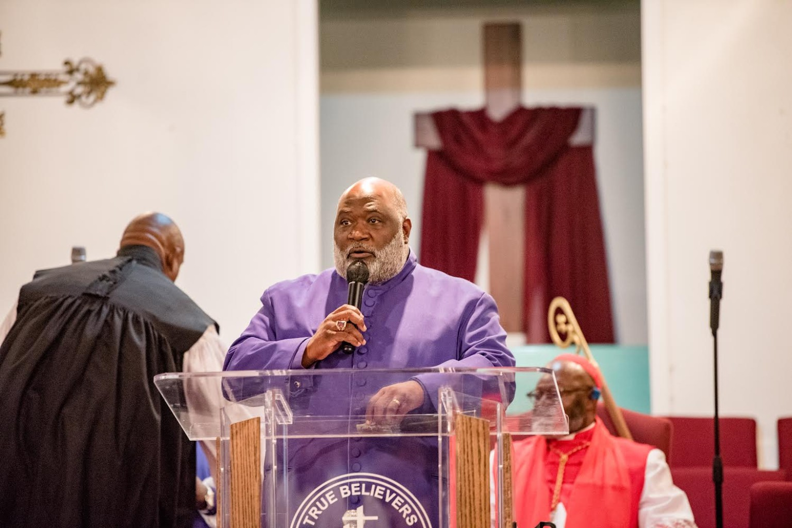

Honor Above All
Well of Hope
Fellowship International
A fellowship centered on faith, leadership, worship and service. Welcome to the online home of Well of Hope Fellowship International.
Well of Hope in Motion
Faith. Fellowship. Purpose.
Well of Hope Fellowship International is centered on faith, leadership, worship and service. This motion piece brings the fellowship crest to life while keeping the focus on the ministry and its message.
Welcome
A place of faith, fellowship and purpose.
Our Fellowship
Learn about the vision, leadership and foundation of Well of Hope Fellowship International.
About WOH →Leadership
Meet the leaders serving the fellowship and supporting its ministry work.
Meet Leadership →Connect & Give
Find fellowship contact information, ways to connect, and current giving options.
Connect →
Ministry in Action
Serving with honor.
“Honor Above All.”
Additional official fellowship history, ministry language and service information can be added as it is finalized.
Explore the Fellowship